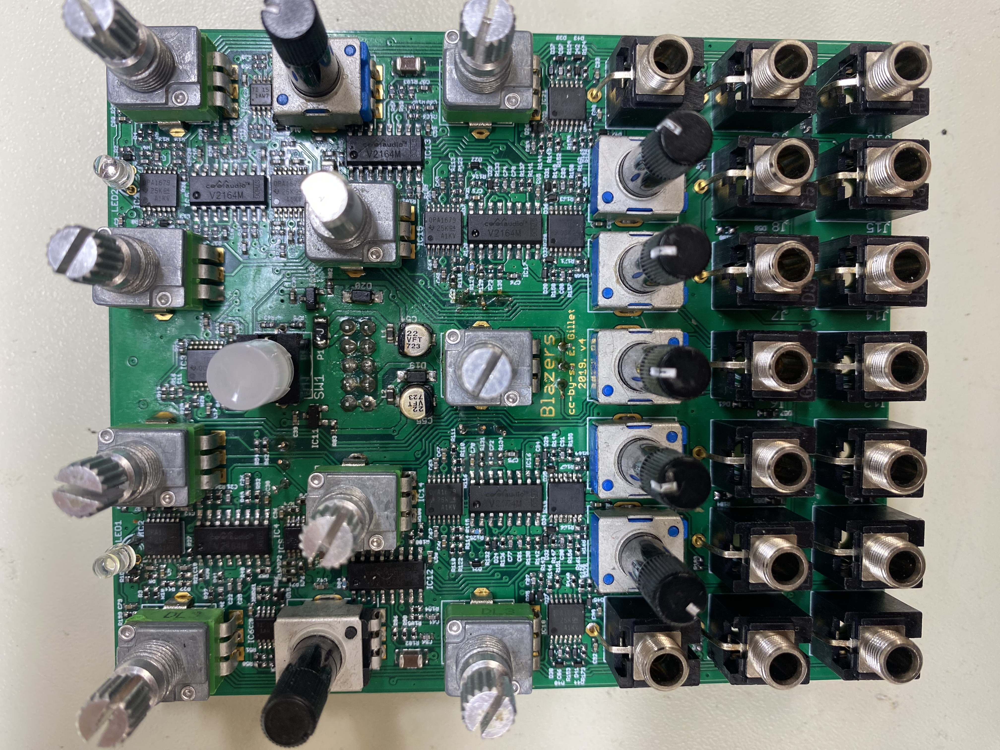
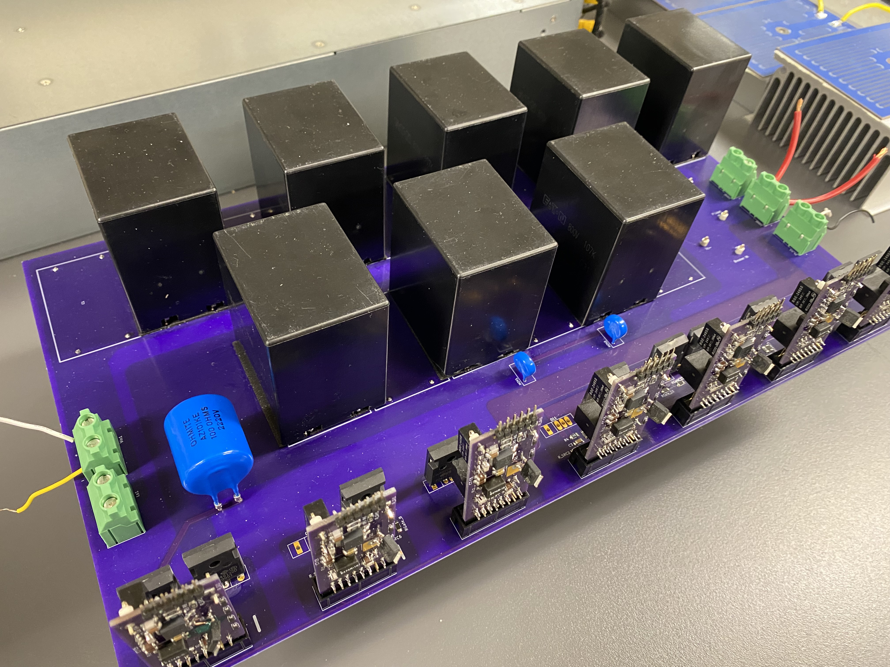

Tyler Bissonnette
Electrical and Computer Engineering Student
Personal projects consisting of analog electronics, circuit board design, and circuit debugging.

Eurorack Clones and SMD Assembly
Assembled three Eurorack modules (Veils, Blades, Marbles) from purchased Mutable Instruments clone PCBs: stencil-printed solder paste with a custom vacuum stencil holder I built, hand-placed SMD parts, hot-plate reflow and hand-soldered through-hole. Debugging stopped in early 2026.
0402 SMD • Stencil & Reflow • 3D Printing • Debugging

High-Voltage Solid-State Circuit Breaker
Derived and simulated the switching timing for a 400–500 V solid-state circuit breaker prototype, then designed, built and debugged its power board and gate drive PCBs.
LTspice • Python • KiCad • Power Electronics • Hardware Integration

Soma Lyra-8 DIY Build
Sourced the components and PCBs for a Soma Synths Lyra-8, soldered all of the boards, and built the front panel, rosewood case and aluminum bottom panel.
Through-Hole Soldering • Panel Design • CNC • Laser Cutting